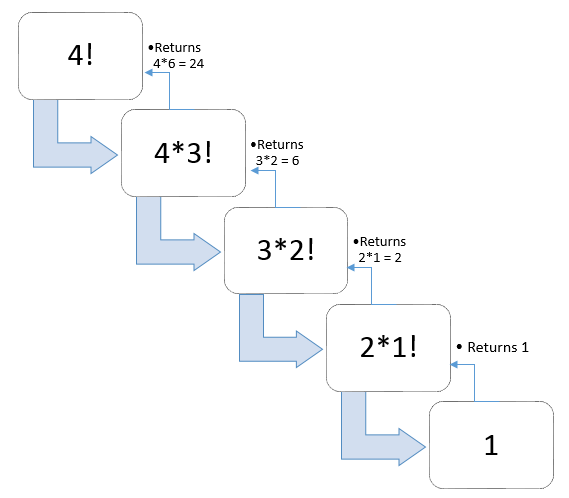
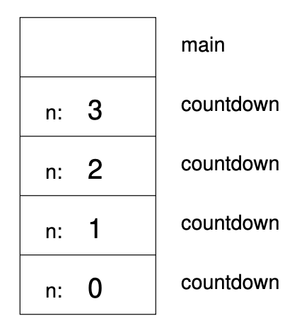

What is Recursion?
Recursion is when a method invokes itself. It is often used to solve complex problems by breaking it down into smaller problems of the same type until the simplest case is reached. Recursion works on the basis of a base case and a recursive case. The recursive case keeps calling the method but for a smaller, less complex task until the base case is reached. The base case makes no recursive calls. Once it is reached, the base case is then plugged into 2nd last method call. This allows another value to be calculated, which can be used to solve for the 3rd last method call. This process repeats until the original method call value is calculated.
Visualization:

This example is used to calculate 4!, which is 4x3x2x1. The algorithm begins by splitting 4! into 4x3!, then 3! into 3x2!, and so on, breaking up each factorial into smaller components. Eventually, 1! is reached, which is 1. This is then returned to calculate 2x1!=2, then that is returned, all the way up to 4!.
Stack Overflow
Recurison can be visualized with a stack diagram. Every time method calls itself it greates a new frame that contains a new version of method’s parameters and variables. The bottom of the stack is the base case.
Diagram: Here, n=0 is the base case.

However, when the base case is never reached, the stack will go on infinitely. This is called stack overflow as the recursion never stops and the stack will run out of space, causing a stack overflow error.
Example Recursion Code
This is the Java implementation of the factorial visualization shown above.
public int factorial(int n){
if (n == 1) return 1;
return n*factorial(n-1);
}